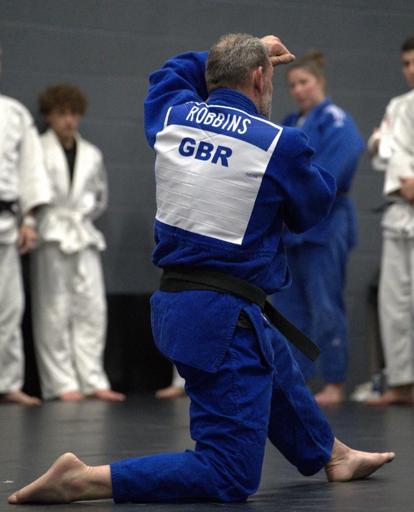

I currently hold a 4th Dan Black belt and have over 30 years experience on the tatami. I have a passion for coaching others to reach personal goals and I have recently been awarded the junior players 'COACH OF THE YEAR' by the British Judo Council, which is my greatest achievement to date from a coaching point of view. I have been very successful competing at County, National and International tournaments. Numerous BJC National Titles and the 2022 BJA English Open championship wins to my name. I am also the Leicester Area Squad Head Coach and look to fulfil my duties within the area and bring even more players into the fold of international tournaments and help build a big talent pool of Judoka in the Leicester Area.
I have over 20 years Judo coaching experience and also hold a Level 3 Personal training qualification. I feel very lucky and privileged to have had this opportunity to realise a boyhood dream and open a permanent Dojo and fitness centre. I strive to combine my passions and inject fun, energy and quality coaching to a brand new facility in Leicester. My focus is to promote a healthy lifestyle from a young age amongst my students and help members make better lifestyle choices by offering my knowledge and time. Whether that be face to face or online coaching, I can help you achieve the goals you set yourself and will support you all the way.
Opening a Judo Academy was first formed in my head many years ago but with a young family I have had to wait until the right time to launch my dream. It started to take shape early in 2019 with hope of training and coaching students through their journey from novice to black belt, ultimately hoping to coach future champions.
Judo and our other martial arts classes will be made available for all ages, fitness levels and judo is an inclusive sport. I will also offer 1-2-1 Personal Training and coaching programs for anyone wishing to specialise and develop their skills, fitness or general well-being goals.